A world that has forgotten its heroes, and heroes who have forgotten themselves.
Three travelers begin a journey into a world that has forgotten what it once was.
One longs for a world they never knew.
One remembers a world nobody believes existed.
One carries a legacy they never asked for.
Darkness has crept across Nesis for centuries, so gradually that few remember life before it. The songs speak of an age that feels more like myth than history. They sing of a united world where the races stood as one, with bountiful lands, far-reaching roads, and a time when a traveler’s greatest danger was the weather. Moss-covered roads vanish beneath ancient forests, while broken watchtowers stand over trade routes no caravan has traveled in generations. Each kingdom hides behind its ever-increasing defenses. Elves, humans, and dwarves have long been isolated. Travelers, who once returned with stories of distant kingdoms, now bring warnings, if anything at all.
But sometimes, people whisper the old stories of the heaven-blessed, the Anam, warriors who rose when darkness threatened to consume the world. The Anam drove back the darkness, united the great cities, and brought an age of peace. But three hundred years have passed since, and the peace they forged has nearly vanished.
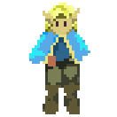
The strong are meant to help the weak.
Elias has recently become the master windmill mechanic for the village of Laria. Raised by Mayor Raeges after being found as a child, Elias never knew his parents, or why an elven infant was left in an isolated human village. While most of Laria is content to let the outside world fade into rumor, Elias clings to the stories of distant kingdoms and forgotten lands. No merchant has visited the remote village in decades, and each passing year the tales grow fainter. Still, Elias can’t shake the feeling that somewhere beyond the hills, the world is larger than anyone in Laria remembers.
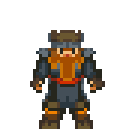
The right path is always simple... if you're an idiot.
Falmri is terse, gruff, and to the point. At least, that’s what most people notice first. The older dwarf has never been one for unnecessary words, and he is even less willing to answer questions about himself. He claims ‘age’ is a private matter and ‘home’ is a complicated question. Falmri speaks of times most people only know through songs, when dwarves lived openly among humans and elves, when mountain-forged steel was shipped by humans and enchanted by elves. Now the great roads have vanished beneath forests home to roving monsters. The dwarves have retreated into their mountain kingdoms, and humans have hidden behind their city walls.
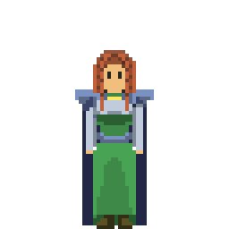
Fate is just an easy excuse for inaction. The same world sits in front of everyone; what we do about it is what matters.
Mia has little patience for hesitation. A sorceress captain of the Geneedean Empire, one of the largest of the great human kingdoms, she is respected among her troops for her skill and feared by those who underestimate her. Mia believes Geneedea’s discipline and resolve are the only things standing between its people and the darkness beyond its borders; to her, the Empire is proof that humanity can endure. While other nations hide in mountains or behind walls, Geneedea sends soldiers and protects even its far-flung citizens, and she believes strength is the only reason the Empire and the Westfel Valley still stand. The onslaught of monsters, from the sea, the mountains, and even the sky, threatens it constantly. Dragons have begun appearing over the northern villages with alarming frequency, and Mia and her unit have been sent north on a critical mission to aid them.
On desktop you can switch between keyboard and mouse at any time just by using the other one.
| Setup | Description | Tested |
|---|---|---|
| Full keyboard | Two hands, controller-style | Primary |
| Keyboard + mouse | WASD to move, mouse click to act. | Primary |
| Mobile touch | On-screen controller | Primary |
| Mouse only | Point and click | Lightly |
Mouse-only is newer and has seen less testing, so expect rough edges there.
WASD moves with your left hand, and O K L ; are the four action buttons under your right, mirroring WASD's layout the way a controller's face buttons do.
| Key | Description |
|---|---|
| L | Confirm · Interact · Attack. The main button. |
| ; | Cancel · Back, and Run in battle. |
| K | Open the menu. |
| O | Toggle the scene-exit markers. |
WASD still moves; the mouse does the rest.
A WASD press switches to keyboard mode; moving the mouse (not clicking) switches to mouse mode. Switching can be convenient when moving between exploration and tactical combat.
The same point-and-click as mobile touch, without the keyboard.
On a phone, held landscape, the game draws an on-screen controller: a d-pad on the left and four face buttons on the right.
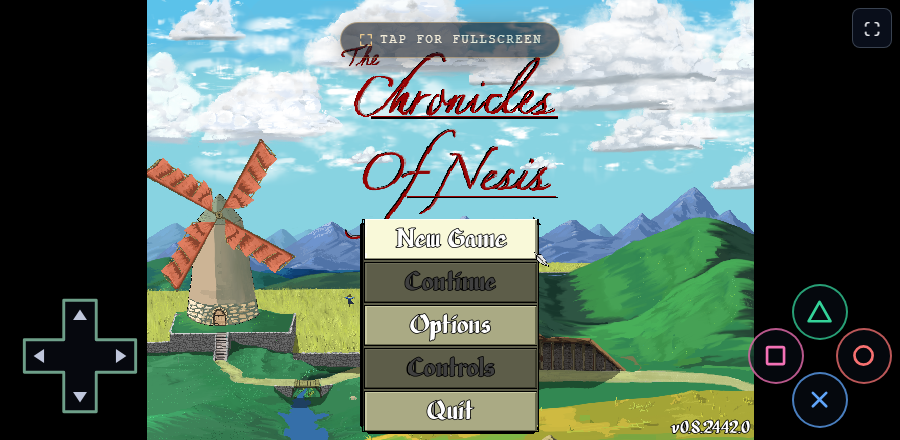
| Button | Description |
|---|---|
| D-pad | Move, and navigate menus. |
| ✕ Cross (bottom) | Confirm · Interact. |
| ○ Circle (right) | Cancel · Back. |
| ☐ Square (left) | Select · Open the menu. |
| △ Triangle (top) | Secondary, such as toggling the scene-exit markers. |
Cross confirms and Circle cancels, following the PlayStation convention.
Outside battle you explore Nesis. Talking to people and looking around will teach you a great deal about the world, and turn up powerful items to help you along the way. NPC dialogue changes as the story progresses, so a person with nothing to offer today may be worth finding again later.
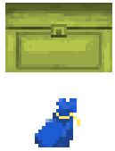
Chests and bags holding useful items can be found across the world of Nesis.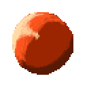
Relics can be found in dungeons or towns. Each one holds both a story of the past and a combat mechanic.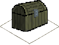
Enemies have a chance to drop items during combat. Walk over the dropped chest before an enemy does or the end of combat to secure it.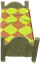
A bed restores HP and MP in full. Some places charge to rest, others do not. Elias' house in Laria is free.You can save from the menu almost anywhere, dungeons included, so long as you are not inside an event or a fight.
The game also keeps one auto-save of its own, overwritten after you change area, win a fight, or move the story forward. It waits until you have control again, so it never lands mid-scene.
An exit marker hovers over every way out of an area, so you can always see where you can leave. They are on by default; toggle them with outside battle.
Controller icons appear to indicate which controller mode the game is in: keyboard, mouse, gamepad, or touch (see Controls for details).
Contact with an enemy triggers combat; occasionally the story triggers it instead. Combat starts immediately, the turn queue and stat blocks sliding into view.
Turn order is determined by each unit's Speed, and by how contact was made. Catching something with its back turned earns an initiative boost; an enemy that catches you from behind earns one for itself.
Quick tip. Consider meeting enemies in a bottleneck to funnel them in a few at a time, or in the open where an area skill can catch several at once.
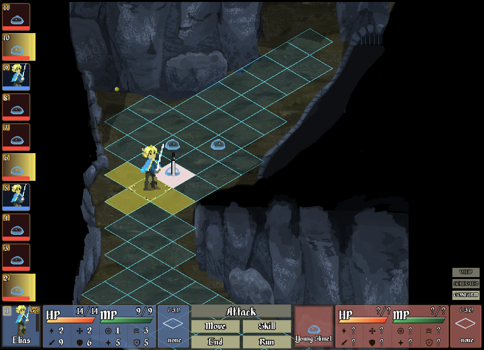
| Marker | Description | |
|---|---|---|
| Gilded corners | Indicates the cell, or cells, of the currently active unit. | |
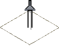 | Vertical sword | Indicates the currently viewed cell. Move it with WASD or the mouse. The viewed stat block in the bottom-right corner then shows the unit standing there and the terrain under it, with the cell's coordinates above the terrain details. |
When your turn begins the action menu slides into view and you start in Selected Mode, with the acting unit already selected. The three modes are shown as buttons in the bottom-right corner, with the current one lit. Cancelling steps back through them, and cancelling out of View returns you to Selected on the current unit.
| Mode | Description | Cancels to |
|---|---|---|
| View | Pan across the grid and inspect units. Triangle opens the full unit detail panel. | Selected (current unit) |
| Selected | Choose what the unit will do, from the action menu. | View |
| Confirm | Choose where that action lands. | Selected |
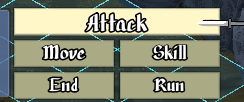
| Action | Description |
|---|---|
| Move | Step across the grid, as far as your Move allows. |
| Attack | Strike within your reach. |
| Skill | Use a learned skill or a slotted relic, usually for MP. |
| End | End the turn, and choose which way to face. |
| Run | Leave the fight. |
During the move phase the tiles you can reach are painted blue.
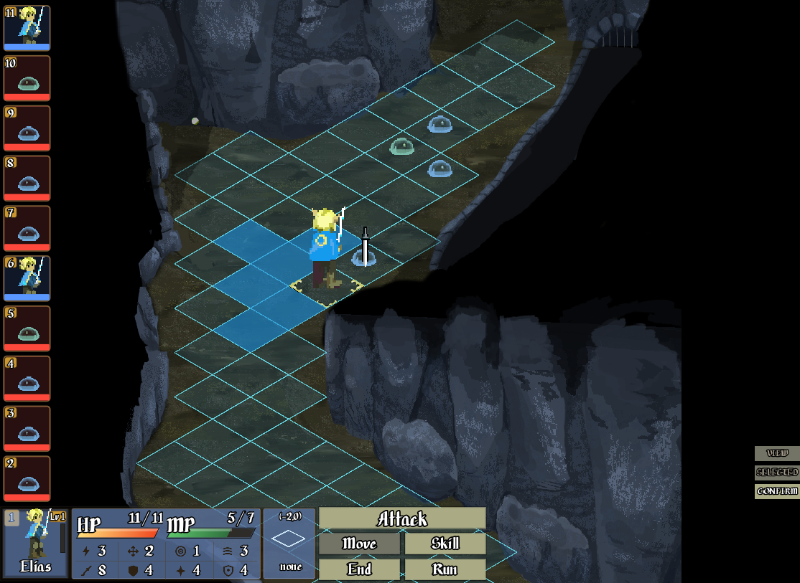
When confirming an attack or a skill, the grid marks where you can target, the impact area, and where valid targets are. An area skill lights more than one impact cell, and those can fall outside the yellow range; all four are flat colours, so anything that pulses is danger, not aim. Reach differs by skill: Elias' normal attack reaches one cell, so the yellow cells paint the four adjacent cells, while Cure and Cleanse reach zero. Both reach further as their Expertise grows, which happens by using them, and others reach further from the start.
| Cell | Description | |
|---|---|---|
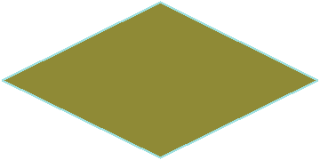 | Yellow | The range. Every cell you could aim at. |
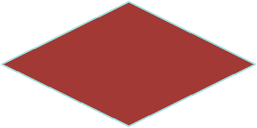 | Red | A valid target stands here. |
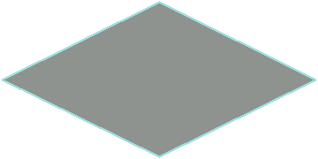 | Grey | Inside the impact area, nothing to hit. |
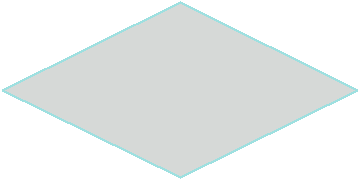 | White | Inside the impact area, something is there. |
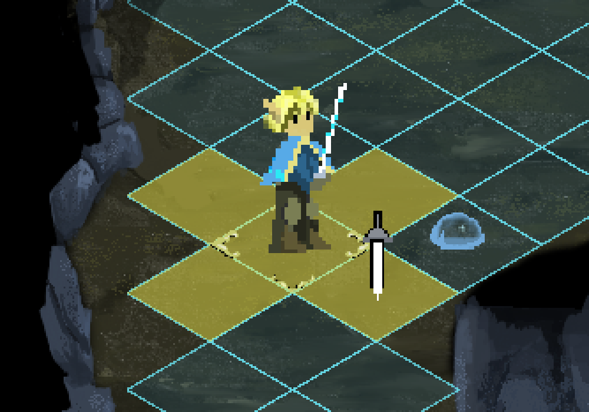
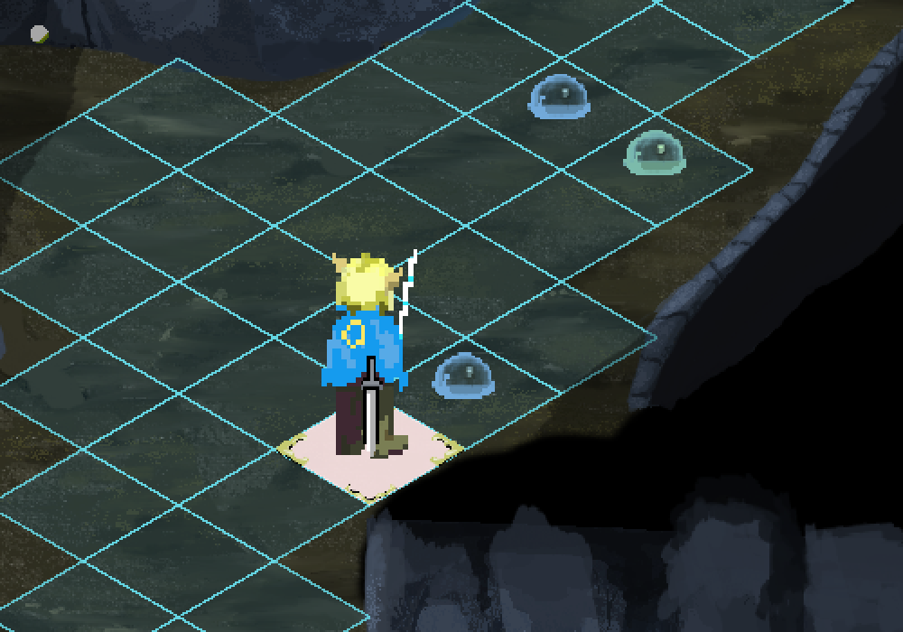
Targeting picks cells, not units. A large enemy stands on several cells at once, so any one of them counts as adjacent for reaching it, and because an area attack resolves cell by cell, covering more of a big unit hits it more than once: cover two of its cells and it is struck twice, cover four and it is struck four times.
◈ Player area skills arrive in Episode Two, so for now this is something done to you rather than by you.
Every player turn ends at the facing picker: four arrows, one for each way the unit can be left standing.
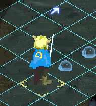
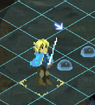
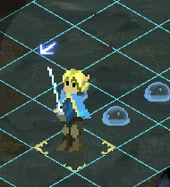
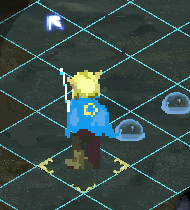
Which way a unit faces decides how well it answers a blow. An enemy striking the face you are turned toward has the hardest time landing it. A strike from the flank is easier. One from behind is both the most likely to land and the most likely to come down as a critical.
You can run from most fights. A boss or a set-piece battle will rarely let you. You cannot run while any of your units stands next to an enemy: break the contact first, and it is the whole party that counts, not just whoever’s turn it is. Running returns you straight to exploring with the enemies still standing where they were, and they will very likely give chase the moment combat ends, so look at where everyone is on the grid before you choose to run.
Some powerful skills are cast after a delay, called charging. Any cells about to be hit by a charged skill are painted with impending damage colouring. Danger cells also appear during your move, when an enemy's reaction skill could trigger.
| Type | Looks like | Description |
|---|---|---|
| Potential | Something could hit you here. | |
| Impending | Damage will land here. When more than one reaction would trigger, a count appears beside the cursor. |
Potential damage cells are only painted during your move. They mark a cell that does not hurt you on the path currently shown, but will turn into damage if the path is extended. An enemy with Opportunity Attack is the common case: step into its range and stop, and the cell is potential; extend the path back out of range and it becomes impending, because leaving provokes the strike.
A charging creature is denoted by flashing grey and by the stagger bar at its feet. The charged attack appears in the turn queue, so read the queue rather than counting turns.
The stagger bar fills as the creature takes damage. Fill it and the creature is Interrupted until its next turn, and its attack is cancelled.
A creature cannot perform reactions while charging, or while Interrupted. ◈ In Episode One only enemies charge.
The danger paint clears while you confirm a target, and returns after.
The combat log shows each attack's hit chance and result, HIT / MISS / CRIT and the damage, so you can see why a fight swung the way it did. Toggle it with the on-screen LOG button, on a keyboard, or on a controller.
There are seven damage types. The six magical types each have a status effect and a ground effect. Units can have affinities for all seven.
Physical is blocked by physical defense; every element is blocked by magic defense.
| Damage type | Type | Status | Ground | |
|---|---|---|---|---|
| Physical | Physical | (none) | (none) | |
| Poison | Magical | Poisoned | 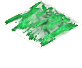 Poison | |
| ◈ Acid | Magical | Acid Covered | 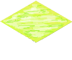 Acid | |
| Radiant | Magical | Blind | ◈ Hallowed | |
| ◈ Ice | Magical | Chilled | Icy | |
| ◈ Fire | Magical | Burning | Aflame | |
| ◈ Necrotic | Magical | Cursed | Cursed |
Any unit under a status effect carries an icon above it, or icons stacked when there is more than one. A status procs at the start of that unit's turn, and keeps procing until its counter reaches zero.
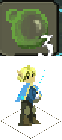
| Status | Comes from | Description | |
|---|---|---|---|
| Poisoned | Poison | Small damage every turn. Less likely to land hits, more likely to be hit. | |
| ◈ Acid Covered | Acid | Damage every turn, and reduced physical defense. | |
| Blind | Radiant | Much less likely to land hits, much more likely to be hit. | |
| Interrupted | A broken charge | The charged attack is cancelled, and the creature cannot react until its next turn. | |
| ◈ Restrained | Web ground | Cannot move, but can still attack from where it stands. | |
| ◈ Chilled | Ice | Movement reduced. | |
| ◈ Burning | Fire | Moderate damage every turn. | |
| ◈ Cursed | Necrotic |
| Ground | Description | |
|---|---|---|
| Poison | A chance to become Poisoned each time it is walked on. The Mother Slime lays it as she moves, and it lasts the rest of the fight. | |
| ◈ Acid | Damages whoever walks on it and applies Acid Covered. | |
| ◈ Web | Costs double movement to cross, with a chance of Restrained. | |
| ◈ Icy | Costs double movement to cross, with a chance to fall prone. | |
| ◈ Aflame | Applies Burning, and a Burning unit leaves an Aflame trail. | |
| ◈ Hallowed | Radiant ground. |
Beyond raw defense, a unit can have an affinity to a damage type.
| Mark | Affinity | Description |
|---|---|---|
| ◈ Vulnerable | Damage type does double damage. | |
| ◈ Resistant | Damage type does half damage. | |
| Immune | Damage type does no damage. | |
| Absorb | Damage type heals instead of damages. |
A permanent affinity shows in the unit’s status details panel, which can only be read once you have Scan at sufficient Expertise. A temporary affinity or effect shows instead as a bubble above the unit, with the turns remaining on it.
◈ Vulnerable and Resistant arrive with the wider damage-mitigation pass.
You learn skills in two ways:
Whether it comes from your class tree or a slotted relic, every skill is one of three types.
| Relic | Icon | Kind | Description | Examples |
|---|---|---|---|---|
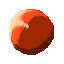 | Action | used on your turn, often costs MP | Smite Cure 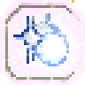 Cleanse | |
| Reaction | triggers automatically in response to something | Counterattack Parry | ||
| Passive | always on, no input needed | Scan Health-up |
Unlocked by spending SP on your class tree. The tree mixes skills, ability-score nodes that raise a raw stat, and Relic Slot nodes.
Expertise on a class skill unlocks further improvements, but those still have to be purchased in the skill tree. Nodes that need Expertise before you can buy them carry a lock, so revisit the tree whenever a class skill gains Expertise.
Passive class skills can be disabled in the Skills menu. Passive relic skills cannot be disabled, though the relic itself can be unequipped. A passive skill earns no Expertise while it is disabled, and enabling it does not guarantee Expertise either.
It is said a relic carries the story of a hero, and an Anam can tap into that hero’s strength. The Prologue tells more of the Anam.
A relic is an item you can find in the Items menu and equip in the Skills menu. On its own it sits in your bag doing nothing; slot it into a Relic Slot to turn on the skill it grants. You start with one Relic Slot; further slots are unlocked on the class tree.
Episode One relics:
| Relic | Description |
|---|---|
| Item | Use consumables such as Mugwort during combat. |
| Scan | Reveals hit chance and enemy HP/MP levels. Without it you aim blind. |
| Move | Increases movement range. |
| Health | Increases total HP. |
| Berserk Counter | Reaction to physical damage, temporarily increasing incoming physical damage in exchange for physical damage output. Dropped by the Mother Slime. |
Every skill and every relic earns Expertise as you use it in battle, and at milestones it improves: hitting harder, reaching further, costing less, and so on. A relic's expertise travels with the relic, so moving it carries the mastery along.
See what is needed to increase a particular skill’s Expertise on the Skill Details panel of the Skills menu.
| HP | Health Points. |
| MP | Magic Points. Restore with Irid Liquor. |
| XP | Experience. |
| JP | Job Points. Granted at each level-up. Spend on raw stats in the Status menu. |
| SP | Skill Points. Granted at each level-up. Spend on your class tree in the Skill Tree menu. |
| EP | Expertise Points. Earned by using a skill or relic. |
There are two types of stats: raw stats, which you increase at level-up, and battle stats, which are determined from your raw stats and the equipment you wear. Stats can also be altered by status effects.
Raw stats are increased by spending JP in the Status menu, or by purchasing stat nodes in the class skill tree.
Three special raw stats, called accumulator stats, cannot be purchased directly. They grow on their own at level-up according to their paired stats, shown in the table below.
Accumulator stats often have a large impact on battle stats, so the pairs you invest in shape a build well beyond the raw numbers you see on the page.
Each character’s class has core stats given by its class tree. Whether you invest further in those, or diverge for a different playstyle, is yours to choose.
| Raw stat | Feeds | How you raise it |
|---|---|---|
| Strength | Physical Attack, Health | Spend JP |
| Constitution | Physical Defense, Health, Magic Defense | Spend JP |
| Stamina | Physical Attack, Physical Defense | Accumulates from Constitution + Strength |
| Dexterity | Physical Hit, and a share of Physical Attack, Dodge and Defense | Spend JP |
| Agility | Physical Dodge, Move, Magic Dodge | Spend JP |
| Speed | Reflex, Physical Hit, Physical Dodge | Accumulates from Agility + Dexterity |
| Intelligence | Magic Attack, Magic Hit, Magic Dodge, Magic Defense, Mana | Spend JP |
| Wisdom | a share of almost everything, physical and magic alike | Spend JP |
| Knowledge | Magic Attack, Magic Hit, Magic Dodge, Magic Defense | Accumulates from Intelligence + Wisdom |
| Luck | ? | Spend JP |
Each battle stat has one primary raw stat that moves it most, with others chipping in, so to raise a battle stat you invest in the raw stat that feeds it.
Battle stats update in real time as you spend on raw stats, before you save, so you can see exactly where an investment lands.
| Battle stat | Grows most from | Also from | |
|---|---|---|---|
| HP | Constitution | Strength | |
| MP | Intelligence | Wisdom, Constitution | |
| Move | Agility | Dexterity | |
| Reflex | Agility | Dexterity | |
| XP Mod | Intelligence | Wisdom | |
| Physical Attack | Strength | Dexterity, Constitution | |
| Physical Hit | Dexterity | Wisdom, Strength, Agility | |
| Physical Dodge | Agility | Dexterity, Wisdom, Strength | |
| Physical Defense | Constitution | Strength, Dexterity | |
| Magic Attack | Intelligence | Wisdom, Dexterity | |
| Magic Hit | Intelligence | Wisdom | |
| Magic Dodge | Intelligence | Wisdom, Agility | |
| Magic Defense | Intelligence | Wisdom, Constitution |
No attack is ever certain, and none is ever hopeless. Whether one lands is weighed between the attacker's Physical Hit and the target's Physical Dodge; magic uses the magical pair instead.
A physical blow that lands can also come down as a critical, for markedly more damage. Luck carries most of it, with Dexterity behind.
| Symbol | Kind | Description |
|---|---|---|
| Consumable | Used once and consumed. Can be used outside combat, or in combat with the Item relic. | |
| Equipable | Can be equipped from the Equipment menu. | |
| Relic | Can be equipped from the Skills menu, according to your slot count. | |
| Key | Key item, can't be sold. |
Quick tip. Buying or finding something is not the same as using it. Equipable gear does nothing until you put it on in the Equipment menu, and a relic does nothing until you slot it in the Skills menu.
| Item | Price | Description |
|---|---|---|
| Valerian Powder | 25 | Cures Poisoned. |
| Mugwort | 40 | Heals a little HP. |
| Leather Boots | 60 | Slightly raises Reflex, Physical Hit, Physical Dodge and Physical Defense. |
| Irid Liquor | 100 | Restores MP. |
| Leather Chestpiece | 150 | Raises Physical Defense. |
Open the menu with Space / K / Tab, the on-screen menu button, or ☐ Square on a controller.
| Menu | Description |
|---|---|
| Status | spend JP to raise raw stats |
| Equipment | equip weapon / armor / accessories |
| Skills | slot relics, use/view skills |
| Skill Tree | spend SP to unlock skills + nodes |
| Items | use / view consumables |
| Save / Load | save your game |
The Status menu is where you spend JP (Job Points) to raise your raw stats, your permanent build.
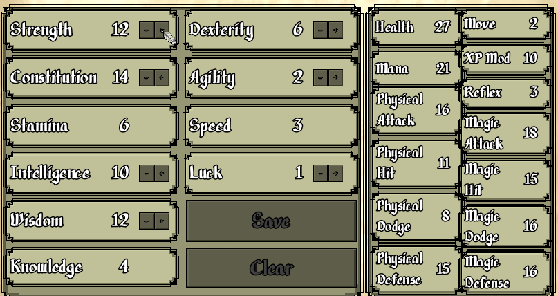
Press + / − on a stat to buy it (each costs JP), then Save to lock it in (Clear resets). The battle stats on the right are calculated from your raw stats, you never edit those directly. The stats without −/+ (Stamina, Speed, Knowledge) are accumulators, they grow on their own at level-up from your past investment (see Growth & Status).
The Skill Tree (your class tree) is where you spend SP (Skill Points) to unlock skills.
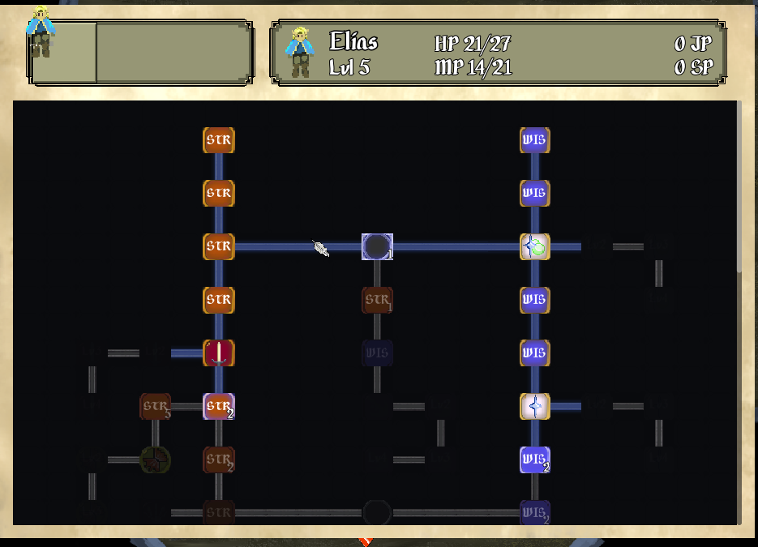
Move the cursor to a node and confirm to learn it (the small number is its SP cost); you can only reach a node that's adjacent to one you've already unlocked. The tree mixes skills (Smite, Cleanse, Push Attack…), stat-up nodes, and the Relic Slot.
The Skills menu lists the skills you've learned and holds your Relic Slots.
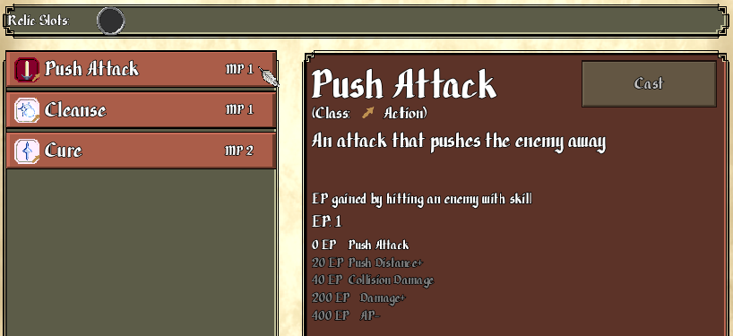
Pick a skill on the left (each shows its MP cost) to see its detail panel, type, effect, and its Expertise (EP) growth tiers. The Cast button uses the skill right there, many work outside combat too (e.g. Cure to heal or Cleanse to clear a status between fights). Drop a relic you own into a Relic Slot (unlock slots in the Skill Tree) to turn its skill on.
The Equipment menu equips a Weapon, Armor, Boots, or Accessory you own into its slot.
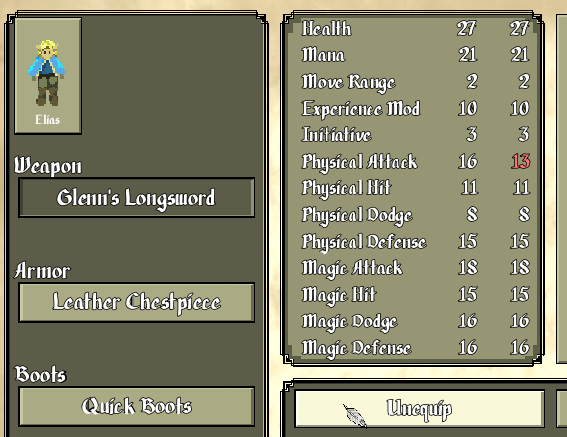
Pick a slot and choose a piece of gear from your bag; the battle stats update live so you can see exactly what a swap does before you commit.
The Items menu lists the consumables you carry (and your relics).
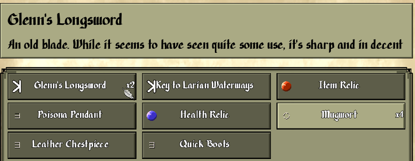
Each item shows a × quantity; selecting one shows its name and effect. Mugwort heals HP, Irid Liquor restores MP, Valerian Powder cures poison. (Using an item in battle needs the Item relic slotted, see Skills.)
The Waterways under Laria hold one family of foe, and each one along the way teaches something the next one assumes you have learned. The tile beneath each is the ground it stands on: the Mother needs four.
| Foe | Affinity | Damage | Reach | Reactions | Skills | |
|---|---|---|---|---|---|---|
| Young Slime | Immune | 1 | none | none | ||
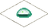 | Young VSlime | Absorb Resistant | 1 | none | none | |
| Slime | Immune | 2 | Opportunity Attack | none | ||
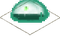 | VSlime | Absorb Resistant | 1 | Opportunity Attack | Poison Cloud | |
| Mother Slime | Immune Resistant | 1 | Opportunity Attack | Poison Cloud, Poison Walk |